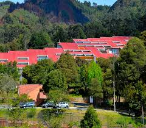

¿Quienes somos?
Esta página ha sido creada como requisito del curso Educación en Tecnología dictada por el docente Alejandro Guerra en la Univerdsidad Distrital Francisco José de Caldas.
Inicialmente se nos pide a los estudiantes crear una página web estática en donde se muestre de manera sencilla la explicación de un tema de interes para nosotros el cual hayamos visto ya en nuestra carrera.
Como estudiante de Licenciatura en Física de la universidad, he creado está página web con una breve y sencilla explicación de la Ley de Gravitación de Newton. ¡Espero que la disfruten!
Un poco sobre mi carrera y mi universidad.

Imagen tomada de: https://pwi.udistrital.edu.co/sites/default/files/2019-01/maca.jpg
La Universidad Distrital Francisco José de Caldas, ubicada en Bogotá - Colombia, a institución de educación superior del Distrito Capital de Bogotá y de la Región Central de la República de Colombia.
Tiene diferentes carreras y tecnológos para cursar. Tiene difentes sedes, como la de la foto, que es la Facultad de ciencias y educacuón o la sede de la macarena. En está última, que es en la que estudio, se encuentran las licenciaturas y ciencias exactas.
En la carrera de Licenciatura en Física, es necesario ver está materia, no solo porque el plan de estudios lo dice, sino porque es indiscutiblemente necesario saber de diferentes herramientas a la hora de enseñar o educar. Este último año nos a demostrado la verdadera imporatancia de lo anterior.
Si quieres conocer más dale ¡click aquí!
Luisa Ortiz - Educación en Tecnología.
Universidad Distrital Francisco José de Caldas.